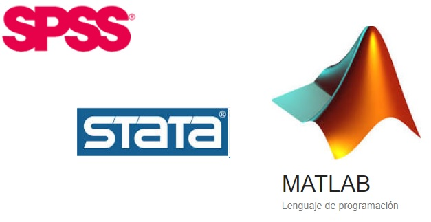
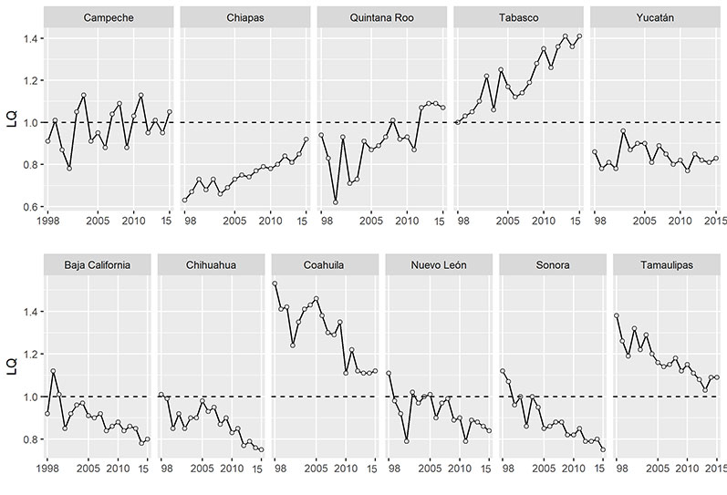
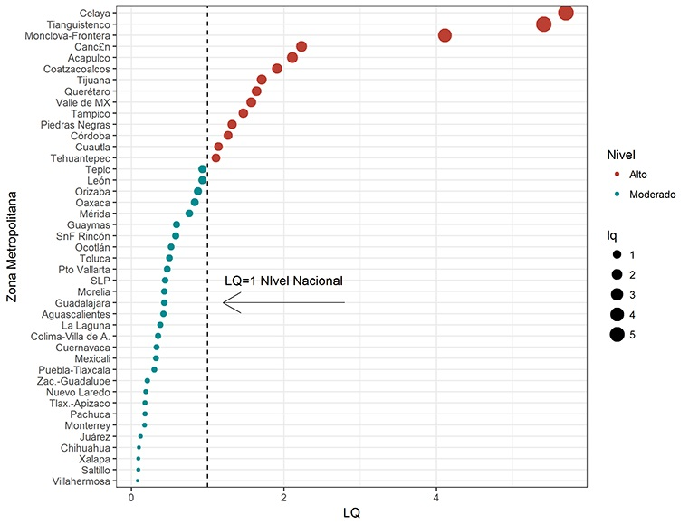
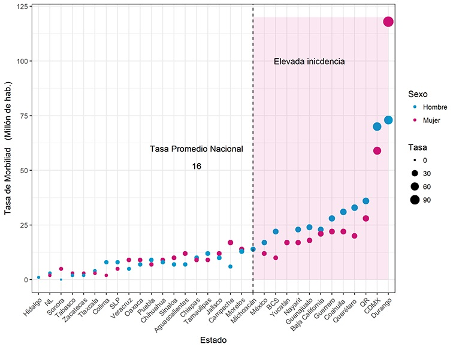
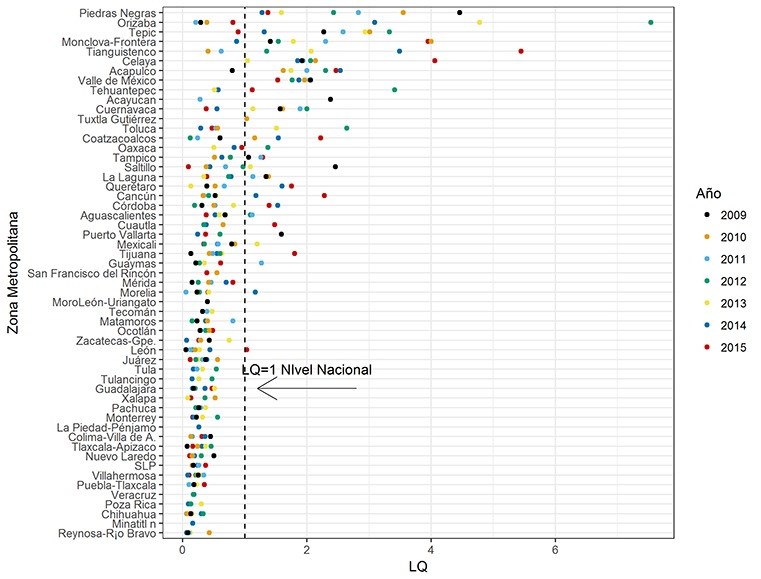
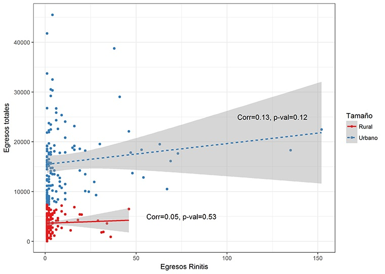
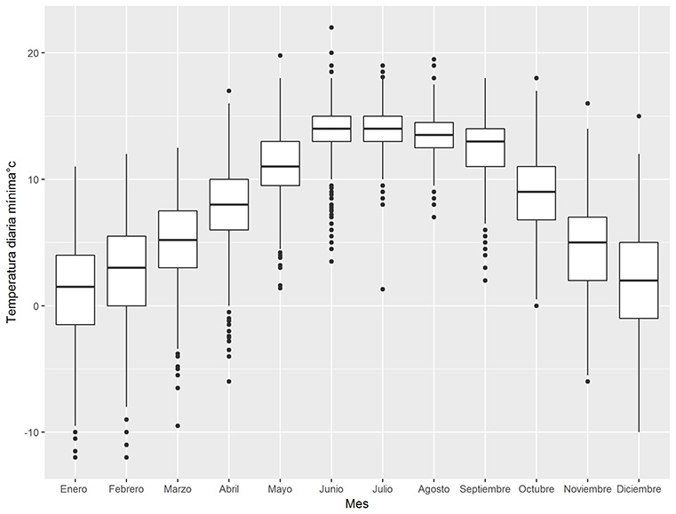

A. Nociones Teóricas
1. Procesos de análisis replicables.
¿Qué son los procesos de análisis replicable?
En la realización de análisis estadístico partimos de una pregunta, generalmente un problema que deseamos resolver. Para resolverlo aplicamos una serie de técnicas para analizar información. Dos fases comunes en este proceso son el Analisis exploratorio de datos y el análisis inferencial.
Una vez que recorremos este proceso y respondemos el questionamiento inicial, la evidencia aportada con el análisis estadístico involucra el surgimietno de nuevas preguntas.

Una característica de este proceso es que es iterativo, es realidad estamos frente a un proceso ciclo. El work flow se repite constantemente.
Sería muy interesante y valioso que los recursos invertidos en términos de tiempo para la solución de un problema pudiesen recurperarse, si, reutilizarse!
De esta forma optimizariamos el uso de nuestros recursos.
La forma de hacer este uso óptimo en términos de análisis estadístico de datos es utilizando proceso replicables.
Piense en las operaciones que comunmente se hacen en Excel por ejemplo. Una vez que se finaliza con una estimación se guarda el archivo y cuando se require hacer un análisis nuevo se abre otro archivo a pesar de que se usan funciones similares para aproximar el cálculo se trabaja doble ya que no se tiene un registro que documente nuestro trabajo paso a paso.
A media que se hacen análisis de mayor complejidad o con un volumen de datos de mayor escala, se hace evidente la necesidad de documentar el proceso de análisis para su repoducción futura.
El entorno de análisis con plataformas como R studio esta diseñado explicitamente para permitir la replicabilidad del proceso de análisis.
1.2 RStudio vs. STATA, SPSS y EXCEL.

La principal ventaja de R sobre otros paquetes disponibles en el mercado actualmente es la flexibilidad del entorno OPEN SOURCE. Una gran comunidad de usuarios, desarrolla y comparte las herramientas que integran R de foma contínua.
Otra ventajas incluyen:
Integración de código (lenguaje R).
Explicitamente incorpora la perspectiva de análisis estadístico y permite la representación gráfica dinámica (ej. Shiny apps).
Generación de reportes endiversos formatos, como HTML, PDF,etc.No solo word.
Manejo de grandes volumenes de datos (base de datos que contienen millones de registros (individuos, observaciones…)
Plataforma que permite utilizar herramientaspara visualización (ej.paquete ggplot2)
Ejemplos
Ejemplo 1: Series de tiempo facets.
growth<-readRDS("sdr_gr08_16_Edos.rds")%>%
mutate(fecha=as.numeric(fecha))
glimpse(growth)
## Rows: 576
## Columns: 8
## $ ENT_NACM <fct> 1, 2, 3, 4, 5, 6, 7, 8, 9, 10, 11, 12, 13, 14, 15, 16, 17,...
## $ sdr <dbl> 0, 0, 0, 0, 0, 0, 0, 0, 0, 0, 0, 0, 0, 0, 0, 0, 0, 0, 0, 0...
## $ fecha <dbl> 8, 8, 8, 8, 8, 8, 8, 8, 8, 8, 8, 8, 8, 8, 8, 8, 8, 8, 8, 8...
## $ casos <int> 22533, 23514, 6693, 13072, 55726, 9557, 76656, 44861, 1934...
## $ logs <dbl> 10.022736, 10.065351, 8.808817, 9.478228, 10.928202, 9.165...
## $ rate <dbl> 0, 0, 0, 0, 0, 0, 0, 0, 0, 0, 0, 0, 0, 0, 0, 0, 0, 0, 0, 0...
## $ DESCRIP <fct> AGS, Baja California, BCS, Campeche, Coahuila , Colima, Ch...
## $ SDR <chr> "otras", "otras", "otras", "otras", "otras", "otras", "otr...ggplot(growth, aes(x=fecha, group=SDR, linetype=SDR)) +
geom_line(aes(y=rate))+
facet_wrap(~DESCRIP, nrow=6)+
geom_hline(yintercept = 0)+
labs(linetype="Tasas")+
ylab("Tasa de crecimiento 2008=0 (%)") +
xlab("Año")+
theme_bw()+theme(legend.position=c(.9,.01))+
scale_x_continuous(breaks=c(8, 10, 12, 14, 16)) Ejemplo 2: series de tiempo agrupadas por variable categórica Cociente de localización.
Ejemplo 2: series de tiempo agrupadas por variable categórica Cociente de localización.

Ejemplo 3: Series de tiempo Precios de la mezcla Mexicana de Petróleo.
oilbrent<-read.csv("Oil_brent.csv")
oilb<-ts(oilbrent$brentp,start=c(2002),end=c(2014), frequency=365)
plot(oilb)
abline(reg=lm(oilb~time(oilb)))
Ejemplo 4: time series. Fluctuacione de temperatura. Ej. daily, monthly, year…
library(astsa)
plot(gtemp, type="o", ylab="Desviaciones de temperatura Global",xlab="año",col="red")
Ejemplo 5: time series Inflación (INPC BANXICO)
inf<-read.csv("inf14ts.csv")
infts<-ts(inf$SP1,start= c(1982,2),end=c(2015,1),frequency=12)
i.ts<-window(infts,start= c(2001,1), end=c(2015,1))
i.dif<-diff(log(i.ts), lag=12)*100
plot(i.dif,col="blue")
View(i.ts)Ejemplo 6 time series, Desempleo e inflación Mensual (INEGI)
p70<-read.csv("i70inegi.CSV")
i70ts<-ts(p70$inf235830,start= c(1970,1),end=c(2015,1),frequency=12)
i<-window(i70ts,start= c(2001,1), end=c(2015,1))
ur = read.csv("desempmx2001.csv",header = TRUE, stringsAsFactors = FALSE)
ur.ts<-ts(data=ur$ur, frequency = 12, start=c(2001,1),end=c(2014,12))
urinfla.mts = cbind(ur.ts, i)
plot(ur.ts)
plot(i70ts)
plot(urinfla.mts,col=c("blue", "red"),lty=1:2)
plot(urinfla.mts, plot.type="single", main="Inflación y desempleo mensual",ylab="%",col=c("blue", "red"),lty=1:2)
Ejemplo 7. Scatter plot, 3 variables: *factors to color and size

Ejemplo 8. Scatter plot Health data, 3 variables: *factors to color and size

Ejemplo 9. Scatter plot Health data, 3 variables: *factors to color and size

Ejemplo 10. Scatter con regression line,

Ejemplo 11. Boxplot con variable factorial.

Asignacion 1 (On class reading): Leer History and Overview of R. Páginas 4 a 10 del libro:
R Programming for Data Science. Libro